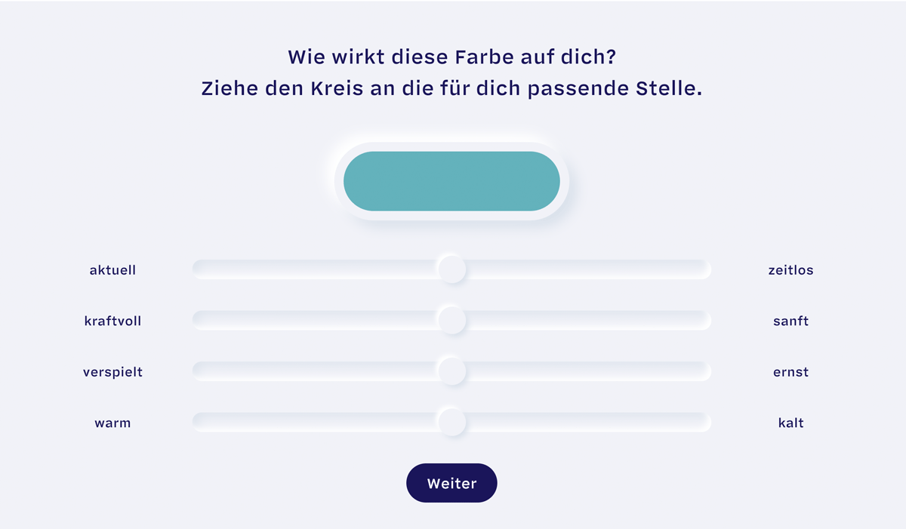

Was ist ColorCode?
Die Feuerwehr ist rot, Banken sind blau, Bio ist grün. Farbcodes
begegnen uns im Alltag immerzu. Wir sind umgeben von Produkten,
deren Farben bewusst gewählt wurden.
Designer stellen sich oft die Frage:
Wie muss eine Farbe aussehen, sodass sie eine ganz bestimmte
Wirkung hat?
Die Antwort hierfür wollen wir* mithilfe von Machine-Learning
finden. Dabei wird ein neuronales Netz mit einem großen Datenset
trainiert, um am Ende ein Muster daraus abzuleiten. Um das zu
erreichen, brauchen wir deine Hilfe!
Es geht darum, einzelnen Farben Adjektive zuzuordnen, indem du die
Regler auf die für dich passende Position verschiebst. Auf diese
Weise nimmst du direkten Einfluss darauf, wie die Maschine
trainiert wird, also gib alles!
Ein Richtig oder Falsch gibt es nicht!
Wie du die Farben zuordnest, ist ganz dir überlassen. Für jede
zugeordnete Farbe gibt es Punkte, die sich mit jedem Level
steigern. Ziel ist es, möglichst viele Punkte zu ergattern, um auf
der Bestenliste ganz oben zu landen.
Wirst du unser Color-König?

Wer steckt hinter dem Spiel?
*Wir, das sind Xinlei, Jasmin und Elli. Wir studieren
Interaktionsgestaltung an der
Hochschule für Gestaltung
in Schwäbisch Gmünd. Im Rahmen eines Projektes beschäftigen wir
uns mit Machine Learning.
Danke, dass du uns bei unserem Projekt unterstützt!
Lieblingsfarbe: Olivgrün

Lieblingsfarbe : Orange
Lieblinsgfarbe: Hellblau